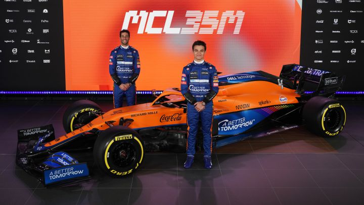

McLaren presenta el MCL35M, el monoplaza para competir en 2021
El MCL35M es una evolución del contendiente de 2020, el MCL35, y se beneficia de
los desarrollos aerodinámicos y de chasis del equipo durante todo el invierno. Junto
a estos desarrollos viene la introducción de una nueva unidad de potencia, suministrada por
Mercedes-AMG", destacó la escudería en un comunicado.

El telón de la temporada 2021 en la Fórmula 1 se ha abierto luego de que McLaren presentara su
monoplaza MCL35M, con el cual competirá con Daniel Ricciardo y Lando Norris como pilotos.
>